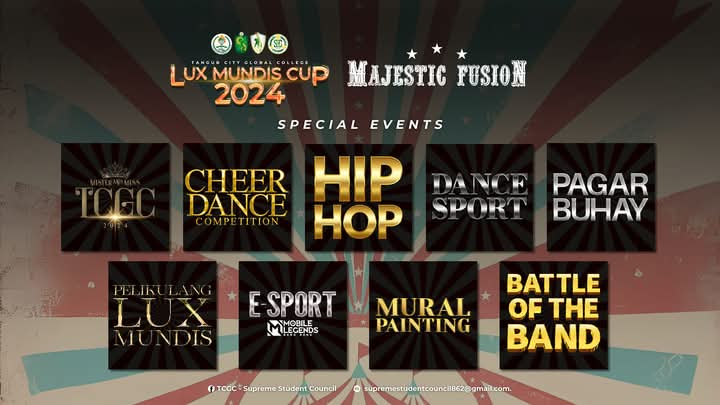

Luxmundis Cup 2024

THE TANGUB CITY GLOBAL COLLEGE WILL HAVE ITS ANNUAL CELEBRATION OF INTRAMURALS - LUX MUNDIS CUP WITH THE THEME "MAJESTIC FUSION". THIS EVENT IS A FIVE-DAY MAJESTIC FUSIONS OF ACADEMIC EVENTS, SPORTS EVENTS, AND SPECIAL EVENTS. THIS EVENT AIMS TO ENABLE EDUCATION LEARNING AND THE SHARING OF KNOWLEDGE AMONG LUX MUNDIS AND PROVIDE IMPORTANT TOOL FOR HELPING THE STUDENT DEVELOP THEIR CRITICAL-THINKING SKILLS. ALSO, MOST IMPORTANTLY, TO DEVELOP THE VALUE OF CAMARADERIE AND BUILD UP RELATIONS AMONG STUDENTS OF THE 6 INSTITUTES OF TCGC.
My experience at the Luxmundi Cup has been incredibly exciting and full of unexpected moments.
One of the highlights for me was the grand opening, especially the breathtaking fireworks display.
It was such a thrilling way to kick off the event, and I wasn’t expecting something so spectacular.
LUXMUNDIS CUP 2024 VIDEOS